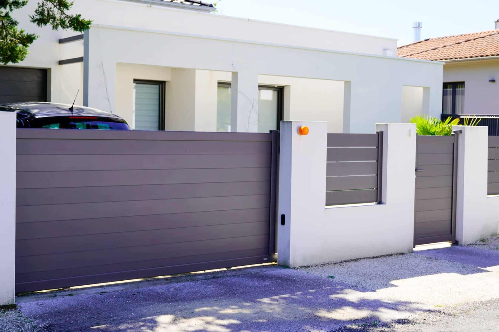

In This Guide
- No fence comes with a guaranteed bump in sale price, but a well-chosen aluminum fence can improve curb appeal, security, and how usable the yard feels.
- Placement, style, installation quality, and upkeep decide whether a fence helps a buyer's first impression or hurts it.
- Separate the monetary value of a fence from its utility value. Utility is the part you enjoy every day you own the home.
- Weigh the downsides honestly: higher upfront cost, professional installation, and the need to keep the coating in good shape.
Nobody can promise that a fence will raise what a home sells for, and it pays to be wary of anyone who quotes you a number. What a fence can do is shape how a buyer feels the moment they pull up to the property. Aluminum is a strong candidate for that job when it is chosen and kept well.
This guide from Big Easy Fence lays out the logic: which qualities of an aluminum fence tend to appeal to buyers, what can undercut them, and how to protect the investment you make.
How a Fence Shapes a Buyer's First Impression
A fence is one of the first things a visitor sees, and it frames everything behind it. Three qualities do most of the work.
Curb Appeal
Clean lines, a sharp finish, and a design that echoes the architecture make a home look cared for. Aluminum comes in many styles and colors, so it can match a modern house or an older one with ornamental detail.
Security and Safety
A sturdy boundary keeps children and pets in and discourages casual entry. For homes with a pool, a strong fence with a reliable gate latch is often a top concern for families, and aluminum is a common choice for it.
A Yard Ready to Use
Buyers picture themselves in the space. A defined, enclosed yard makes it easier to imagine dogs, gardens, and weekend cookouts without starting a fence project on day one.
Factors That Shape the Payoff
Two homes can install the same fence and get very different reactions. These four factors explain most of the gap.
Placement
A fence set too close to the house can make the property feel cramped. One set too far out can make parts of the yard hard to reach. The best line balances safety and privacy with easy access to every part of the property.
Style and Design
A crisp, modern fence with clean lines or tasteful ornament reads as an upgrade. A dated or mismatched style reads as a project waiting to happen. Browsing finished projects in the gallery is a quick way to see which lines suit a home like yours.

Installation Quality
A poorly installed fence detracts from a property and can be a safety hazard. Leaning posts and uneven sections are the first things a buyer or inspector notices, which is why installation is worth entrusting to a professional crew.
Condition and Upkeep
A fence that looks maintained supports the sale. A fence with chipped finish and loose hardware sends the opposite signal. The care routine in our guide to how long aluminum fences last is the same routine that keeps a fence sale-ready.
Monetary Value vs Utility Value
These two ideas get mixed up, and separating them makes the decision clearer.
Monetary value is what a fence adds to the home in a buyer's eyes, and that depends on its quality, the cost of installation, and how it fits the property. Utility value is how well the fence meets your own needs for security, privacy, and appearance. You collect utility value every day you live there, whether or not a buyer ever pays extra for it.
A fence's effect on price depends on the home, the neighborhood, and the buyer. Choose the fence for the years you will live with it, and count any resale benefit as a plus.
How Aluminum Compares With Other Materials
Buyers notice material, and each common option sends a slightly different message.
Classic Look, More Upkeep
A wood fence adds charm and privacy, but it is exposed to rot and warping over time and needs regular sealing.
Low Upkeep, Uniform Finish
Vinyl is durable and easy to keep clean. Prices vary by style, and it can cost more than some other options.
Sleek, Durable, Customizable
Aluminum offers a modern look and very little maintenance, and it fits almost any property and style.
Affordable, Little Privacy
Chain link is durable and low maintenance and usually the lowest-cost option, but it adds less curb appeal and privacy.
Downsides to Weigh Honestly
Aluminum is a good fit for many homes, but it is not free of trade-offs.
- Higher upfront cost. Aluminum generally costs more than wood or chain link at installation.
- Professional installation. Getting posts, panels, and gates right takes skill and specialized tools.
- Coating care. Humidity and moisture can attack bare metal wherever the finish chips, so neglect shows up as corrosion.
- Limited privacy in open styles. Picket designs are see-through, so a buyer who wants screening needs a slat or panel style.
Protecting the Value You Build
A few habits keep a good fence working in your favor.
- Pick a style that suits the house. Look at the roofline, trim color, and neighbors before choosing.
- Hire experienced installers. Clean lines and secure gates show in the finished product.
- Keep the finish healthy. Wash it, touch up chips, and fix small issues as they appear.
- Keep records. Save the invoice and a few dated photos so a future buyer can see what was installed and how it has been cared for.
If you are thinking about a fence for your home, our residential fencing services page shows how a project comes together, and our metal fence team can talk through aluminum styles and layouts for your property.
Planning a Fence That Suits Your Home?
Share your property details and we will help you choose a style, height, and layout that fit the house and the neighborhood.